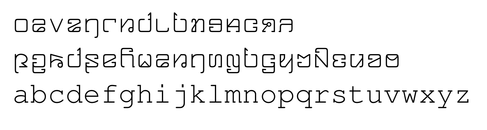
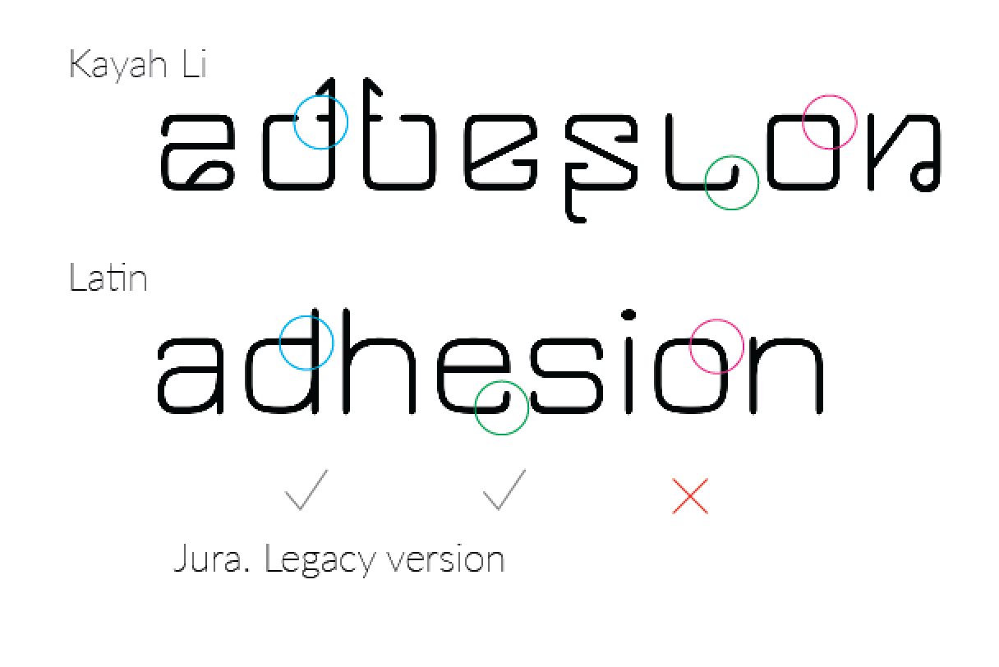
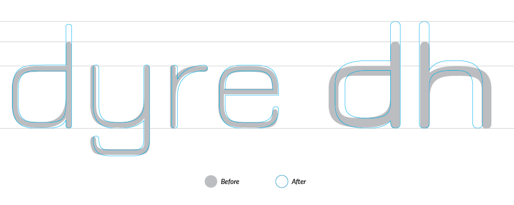
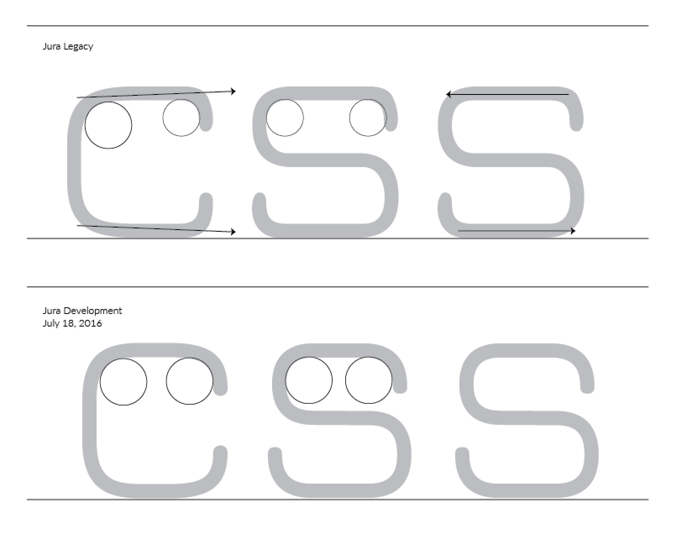
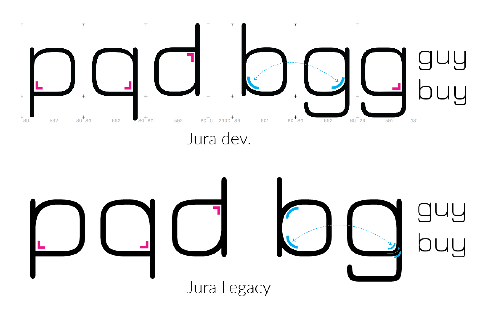

Opensource font by Daniel Johnson and Alexei Vanyashin
The new version of Jura has been improved and extended to support more languages, including Vietnamese. As the co-author of this updated typeface I will go through the stages of this process.
My design brief was to improve Jura and expand the Latin glyphs to the new GF Latin Plus glyph set. As I explored the existing sources I realised there were a lot of design-related issues with contrast, spacing and letterforms that needed attention. The four existing font were not compatible, which meant I would need to deal with each fonts separately without the comfort of interpolation. It came to me that redesigning the fonts masters from scratch would a better solution.
I wanted to create a Roman alphabet using the same kinds of strokes and curves as the Kayah Li glyphs, and thus Jura was born.
Daniel Johnson, original author of Jura
My first major decision was to define what needed to be kept, and what fixed. This wouldn’t have been possible without understanding the roots of the project.
It all started with the Kayah Li range which I created for FreeMono (whose Latin range is a clone of Courier). Insofar as was possible, I tried to use curves copy/pasted from the glyphs in that range (though, because Kayah Li does not have full diagonal strokes, I could not use this idea throughout).
Daniel Johnson, original author of Jura
Kayah Li is a Sino-Tibetan language spoken in Burma, and Thailand. It’s writing system is very young, devised in 1962.
Following the investigation, I have looked into Daniel's 'Kayah Li' in FreeMono. There wasn’t much coherency between the two scripts in this design. This explains where the intention to create a better Latin for the Kayah Li part comes from.
Now, let's compare the two scripts in Jura. Definitely, the Latin part is more congruent with Kayah Li. I have set sample text using the 'trademark' p,y,g,z glyphs, were features are most apparent:
Graphical features of Jura are closely related to the Kayah Li part, with an offset to the diagonal nature of some strokes, unique for this script. Another detail, Kayah Li lacks the roundness of Latin.
The principle of modularity is perfectly applicable to Jura. Similar so-called sibling-shapes have a common base. Constructivists coined the term polygram (πολύ — many; γράμμα — letter) referring to a common construction used to derive multiple glyphs. The overlay in this image is a polygram for glyphs a,s,e,c,o,h,u,y, and n.
Applying the modularity principle brought clarity, and refined the shapes rhythm.
In glyph c I attempted to stay closer to the source, and made different radiuses for outside and inside curves. However this created a visible outward movement, and was later removed.
Applying the logic further, I started working on O C G. While designing S I felt the urge to 'borrow' the top part from C for better coherency. This was another deviation from the original.
Daniel questioned my deviations from the original design, and I created a diagram to illustrate the design principle, to which the author agreed.
The legacy version had three different design solutions which ideally need to be unified in accord with the Eurostile vein. The lowercase g has an upward nod, which I interpreted as a suggestion to tie is closer with siblings b,u,y, and the like. On the other hand glyphs p, q, d follow a different convention, this is kept.
Here is a diagram of curve treatment for this letter group. The red curves are needed for adding extra white to the conjunction with the stem (i.e. compensation for an inktrap).
I discovered a better method for generating this master: with the remove overlap option off.
This produces a much cleaner result, and eliminates the need for a post-filter cleanup, as in my previous method. Today I have completed basic uppercase glyphs, and compared their metrics with the Light master using the Autopsy plugin.
In a case of a modular typeface like Jura I tried to go with as few accent variants as possible. However some custom accents were built for this set: narrow macron and tilde, wider uppercase alternates for circumflex, and its derivatives.
The narrow tilde is used for itilde, and also for Vietnamese circumflex+tilde combinations. The latter case requires both accent to match in widths.
The font inspector script was a great helper for refining metrics. I hope this time investment will pay off, and make kerning a lesser hassle. The results of my work can be checked on Jura's minisite, and in the project PDF. Jura fully supports the GF Latin Plus range. An additional Bold weight was added. Greek, Cyrillic, and Kayah Li glyphs were not touched, and are kept from the legacy version for compatibility.